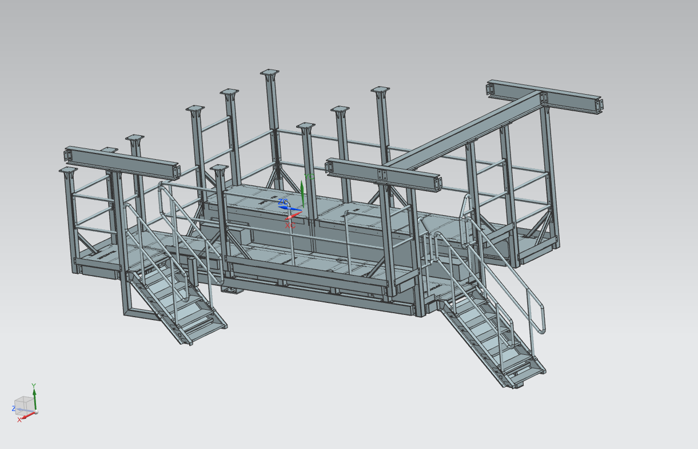
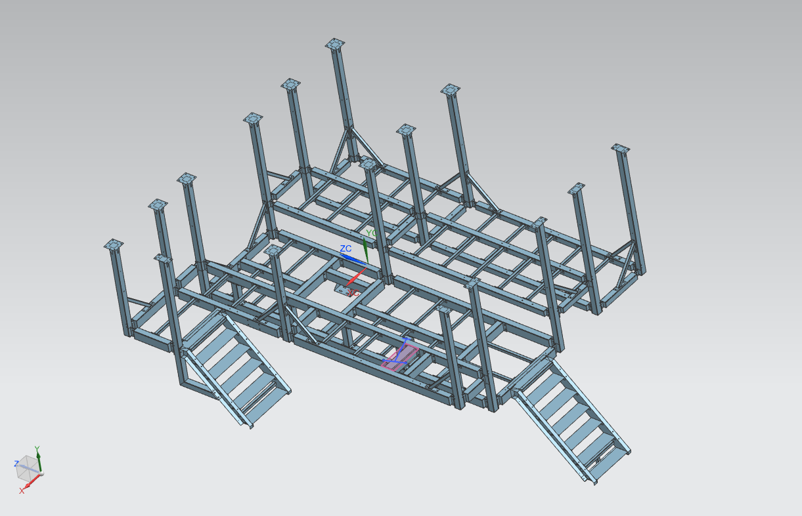
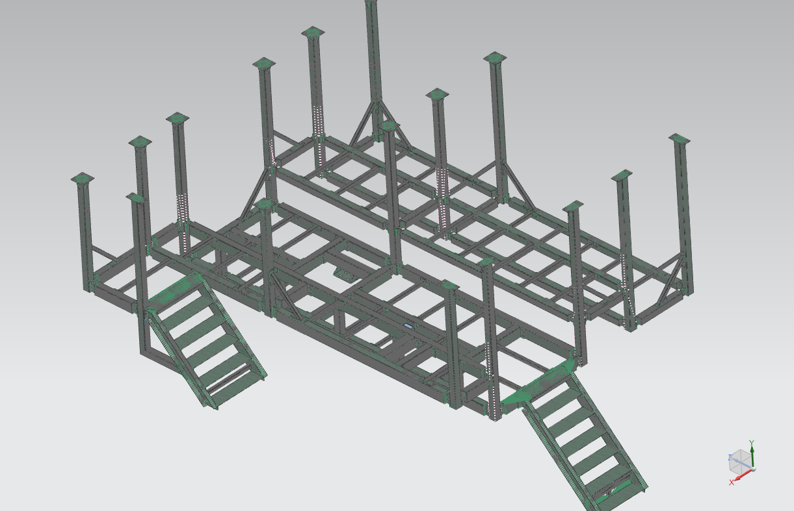
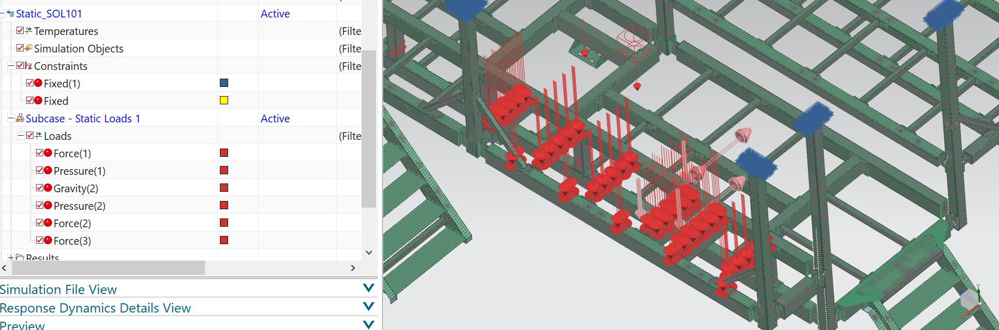
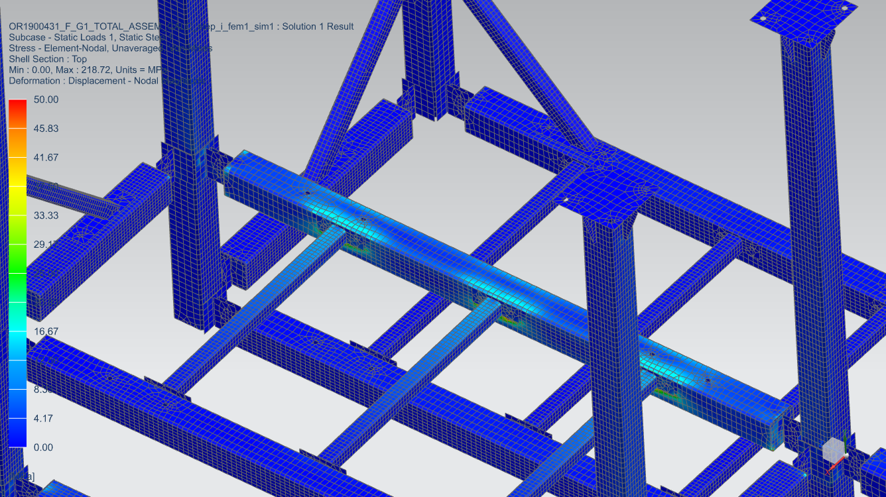
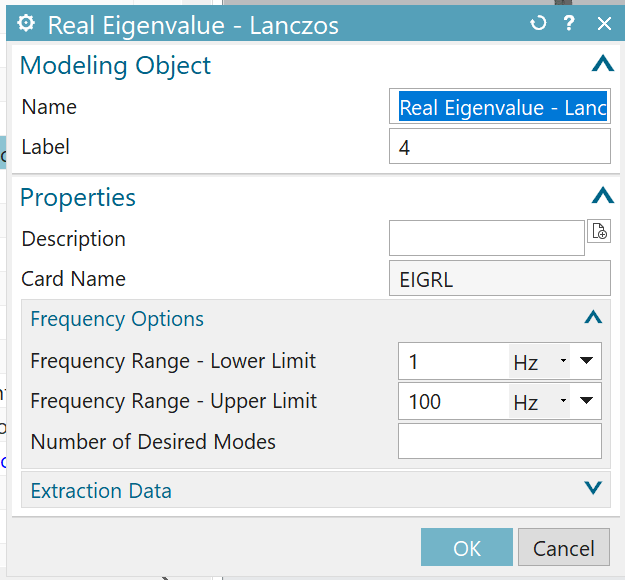
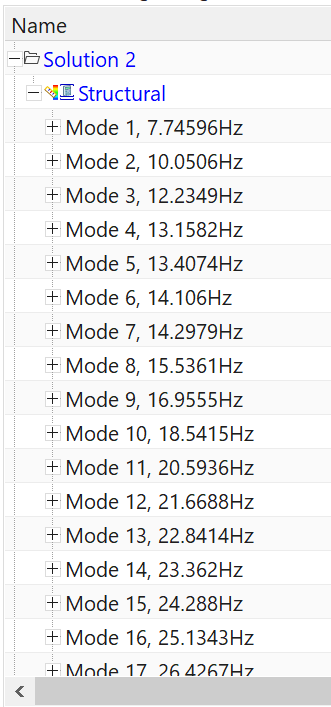
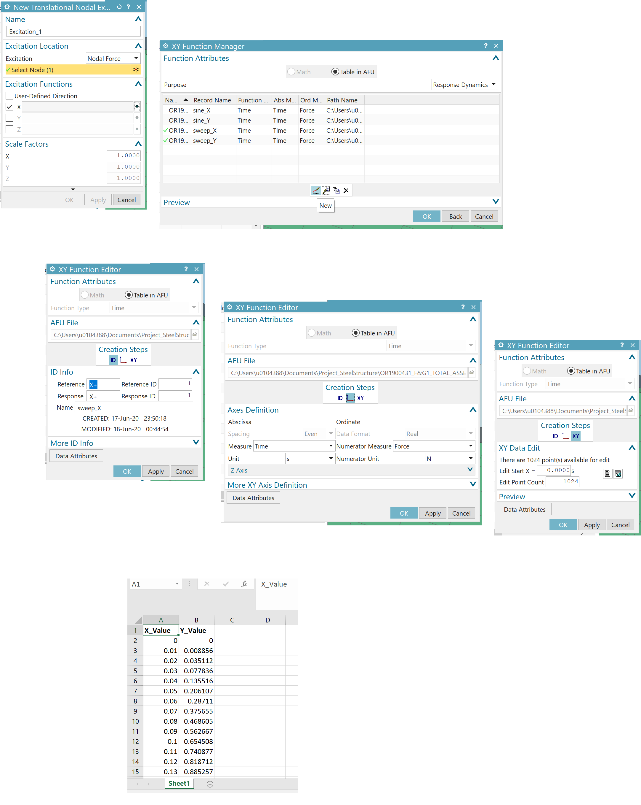
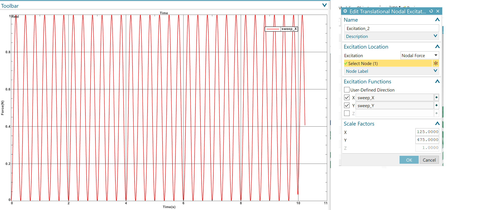
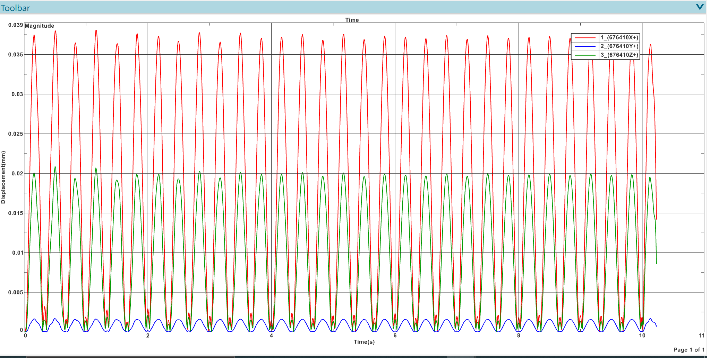

using SOL 101 and SOL 103 / Tutorial SOL 103 - Response Dynamics in NX Simcenter
- Chetan G. 06/2020 (last edited: 01/2021)
The following pages document the steps followed during the static and dynamics analysis done on a metal platform. This also acts as a draft version of tutorial on SOL 103 in NX Simcenter.
Platform - CAD

Fig: CAD model of the structure.

Fig: Idealized CAD model of the structure.
Meshing
The structure is meshed using 2D mesh - CQUAD8. 1D connection elements RBE2 and RBE3 are used to connect elements that are connected by bolts and welding respectively. (Note: use of RBE elements may encounter fatal error during simulation due to conflicting degrees of freedom assigned to different elements sharing the dependent node of RBE elements. Carefully assign the constraints on elements or set AutoMPC to YES.)
A vibrating chute is mounted on the structure with 3 legs. The static load of each of these legs are added as scalar mass elements (0-D element) Cmass1. (Note: 0-D elements pass only displacements and not forces during simulation)

Fig: Meshed model of the structure.
Static simulation (SOL 101)

Fig: Constraints and loads are applied in static solution SOL101.

Fig: Result (von Mises stress) of solution SOL101.
Response Dynamics (SOL 103)
SOL 103 - Response Dynamics is performed to find the natural frequencies and based on this result a new simulation process is added. In this simulation process dynamic loads (vertical and horizontal) are added as new events.

Fig: During dynamic subcase of SOL103, Lanczos eigenvalue method was chosen with the settings shown in the figure.

Fig: Natural frequencies of structure as solved by SOL 103.

Fig: Applying dynamic loads as new event with excitations are shown in the screenshots.

Fig: The new excitation applied at one of the legs of the chute is given in the figure above. A sine wave of 3Hz is applied in vertical and horizontal directions (X sweep and Y sweep.)

Fig: Evaluating function response - nodal with respect to the chosen node gives the above results.